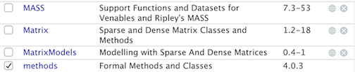

Using R for GIS
In this course, we will be using R for all our GIS needs. If you’ve
never used R before, no worries! We will move at a slow and steady pace
and will provide support along the way. If you’re an R pro, feel free to
flex your R skills and (hopefully) build on them!
The objectives of the guide are as follows
- Install and set up R and RStudio
- Understand R data types
- Understand R data structures
- Understand R functions
- Introduction to tidyverse and its suite of data wrangling
functions
- Understand R Markdown
- This lab guide follows closely and supplements the material
presented in Chapters 2, 4, 5, 7, and 21 in the textbook R for Data Science (RDS).
What is R?
R is a free, open source statistical programming language. It is
useful for data cleaning, analysis, and visualization. R is an
interpreted language, not a compiled one. This means that you type
something into R and it does what you tell it. It is both a command line
software and a programming environment. It is an extensible, open-source
language and computing environment for Windows, Macintosh, UNIX, and
Linux platforms, which allows for the user to freely distribute, study,
change, and improve the software. It is basically a free, super big, and
complex calculator. You will be using R to accomplish all data analysis
tasks in this class. You might be wondering “Why in the world do we need
to know how to use a statistical software program?” Here are the main
reasons:
You will be learning about new concepts in lecture and the
readings. Applying these concepts using real data is an important form
of learning. A statistical software program is the most efficient (and
in many cases the only) means of running data analyses, not just in the
cloistered setting of a university classroom, but especially in the real
world. Applied data analysis will be the way we bridge statistical
theory to the “real world.” And R is the vehicle for accomplishing
this.
In order to do applied data analysis outside of the classroom,
you need to know how to use a statistical program. There is no way
around it. If you want to collect data on health, you need a program to
store and analyze that data.
The next question you may have is “I love Excel or SAS or SPSS or
Stata [or insert your favorite program]. Why can’t I use that and forget
your stupid R?” Here are some reasons:
- R is free. Most programs are not.
- R is open source. Which means the software is community supported.
This allows you to get help not from some big corporation
(e.g. Microsoft with Excel), but people all around the world who are
using R. And R has a lot of users, which means that if
you have a problem, and you pose it to the user community, someone will
help you.
- R is powerful and extensible (meaning that procedures for analyzing
data that don’t currently exist can be readily developed);
- R has the capability for mapping data, an asset not generally
available in other statistical software.
- If it isn’t already, R is becoming the de-facto data analysis tool
in many fields, including for many CA DPH positions.
R is different from Excel in that it is generally not a
point-and-click program. You will be primarily writing code to clean and
analyze data. What does writing or sourcing code mean?
A basic example will help clarify. Let’s say you are given a dataset
with cancer cases across CA. You have a variable in the dataset
representing age Let’s say this variable is named AGE.
To get the mean age of the people in your dataset, you would write code
that would look something like this
# Download Cancer Dataset
download.file("https://raw.githubusercontent.com/pjames-ucdavis/SPH215/refs/heads/main/CA_Cancer_Data.rds", "ca_cancer.rds", mode = "wb")
# Read in Cancer Dataset
cancer <- readRDS("ca_cancer.rds")
# Get names of columns or variables
head(cancer)
## time event AGE INS geometry
## 1 1.275976 1 67 Mcr -122.3492, 38.3025
## 14 3.509907 1 69 Mcr -121.98325, 37.82052
## 17 10.297702 0 75 Mng -122.3092, 38.3314
## 36 7.012532 0 46 Mcr -122.20308, 38.09592
## 55 3.389200 0 70 Mcr -122.63560, 38.26257
## 92 6.110251 1 59 Unk -122.01982, 37.35523
# Get mean of AGE variable
mean(cancer$AGE)
## [1] 60.4692
The command tells the program to get the mean of the variable
AGE. If you wanted the sum, you write the command
sum(cancer$AGE).
Now, where do you write this command? You write it in a script. A
script is basically a text file. Think of writing code as something
similar to writing an essay in a word document. Instead of sentences to
produce an essay, in a programming script you are writing lines of code
to run a data analysis. We’ll go through scripting in more detail later
in this lab, but the basic process of sourcing code to run a data
analysis task is as follows.
- Write code. First, you open your script file, and write code or
various commands (like
mean(cancer$AGE)) that will execute
data analysis tasks in this file.
- Send code to the software program to run (R in our case).
- Program produces results based on code. The program reads in your
commands from the script and executes them, spitting out results in its
console screen.
I am skipping over many details, but the above steps outline the
general work flow. You might now be thinking that you’re perfectly happy
pointing and clicking your mouse in Excel (or wherever) to do your data
analysis tasks. So, why should you adopt the statistical programming
approach to conducting a data analysis?
- Your script documents the decisions you made during the data
analysis process. This is beneficial for many reasons.
- It allows you to recreate your steps if you need to rerun or alter
your analysis many weeks, months, or even years in the future.
- It allows you to share your steps with other people. If someone asks
you what were the decisions made in the data analysis process, - just
hand them the script.
- Related to the above points, a script promotes
transparency (here is what I did) and
reproducibility (you can do it too). When you write
code, you are forced to explicitly state the steps you took to do your
research. When you do research by clicking through drop-down menus, your
steps are lost, or at least documenting them requires considerable extra
effort.
If you make a mistake in a data analysis step, you can go back,
change a few lines of code, and poof, you’ve fixed your
problem.
It is more efficient. In particular, cleaning data can encompass
a lot of tedious work that can be streamlined using statistical
programming.
Hopefully, I’ve convinced you that statistical programming and R are
worthwhile to learn. Now let’s talk about getting R on your
computer!
Getting R
R can be downloaded from one of the “CRAN” (Comprehensive R Archive
Network) sites. In the US, the main site is at http://cran.us.r-project.org/. Look in the “Download and
Install R” area at the top. Click on the appropriate link based on your
operating system.
If you already have R on your computer, make sure you have
the most updated version of R on your personal computer (4.4.2 “Trophy
Case”).
Mac OS X
On the “R for Mac OS” page, there are multiple packages that
could be downloaded. Depending on the model of your Mac, pick the
appropriate .pkg file. Note the details for some operating systems.
If you are using an older operating system, please follow
instructions.
After the package finishes downloading, locate the installer on
your hard drive, double-click on the installer package, and after a few
screens, select a destination for the installation of the R framework
(the program) and the R.app GUI. Note that you will have to supply the
Administrator’s password. Close the window when the installation is
done.
An application will appear in the Applications folder:
R.app.
Browse to the XQuartz
download page. Click on the most recent version of XQuartz to download
the application.
Run the XQuartz installer. XQuartz is needed to create windows to
display many types of R graphics: this used to be included in MacOS
until version 10.8 but now must be downloaded separately.
Windows
On the “R for Windows” page, click on the “base” link, which
should take you to the “R-4.5.2 for Windows” page
On this page, click “Download R-4.5.2 for Windows”, and save the
.exe file to your hard disk when prompted. Saving to the desktop is
fine.
To begin the installation, double-click on the downloaded file.
Don’t be alarmed if you get unknown publisher type warnings. Window’s
User Account Control will also worry about an unidentified program
wanting access to your computer. Click on “Run”.
Select the proposed options in each part of the install dialog.
When the “Select Components” screen appears, just accept the standard
choices
What is R Studio?
If you click on the R program you just downloaded, you will find a
very basic user interface. For example, below is what I get on a
Mac:
We will not use R’s direct interface to run analyses in this class.
Instead, we will use the program RStudio, which is much
easier to interact with! RStudio gives you a true integrated development
environment (IDE), where you can write code in a window, see results in
other windows, see locations of files, see objects you’ve created, and
so on. To clarify which is which: R is the name of the programming
language itself and RStudio is an interface that makes writing code,
running analyses, and visualizing data in R so much easier.
Getting R Studio
To download and install RStudio, follow the directions below
Navigate to RStudio’s download
site
We’ve already downloaded R, so click on the appropriate link to
Install RStudio based on your OS (Windows, Mac, Linux and many others).
Do not download anything from the “All Installers and Tarballs”
section.
Click on the installer that you downloaded. Follow the
installation directions, making sure to keep all defaults intact. After
installation, RStudio should pop up in your Applications or Programs
folder/menu.
The RStudio Interface
Open up RStudio. You should see the interface shown in the figure
below which has three windows.

The RStudio Console
- Console (bottom left) - The way R works is you
write a line of code to execute some kind of task on a data object. -
The R Console allows you to run code interactively. The screen prompt
> is an invitation from R to enter its - world. This is
where you type code in, press enter to execute the code, and see the
results.
- Environment, History, and Connections tabs
(upper-right)
- Environment - shows all the R objects that are
currently open in your workspace. This is the place, for example, where
you will see any data you’ve loaded into R. When you exit RStudio, R
will clear all objects in this window. You can also click on to clear out all the objects loaded and
created in your current session.
- History - shows a list of executed commands in the
current session.
- Connections - you can connect to a variety of data
sources, and explore the objects and data inside the connection. I
typically don’t use this window, but you can.
- Files, Plots, Packages, Help and Viewer tabs
(lower-right)
- Files – shows all the files and folders in your
current working directory
- Plots – shows any charts, graphs, maps and plots
you’ve executed
- Packages – shows available R packages
- Help – displays help documentation
- Viewer – displays local web content
There is also a fourth window. But, we’ll get to this window a little
later. The assignment guidelines
also have more on this window!
Setting RStudio Defaults
While not required, I strongly suggest that you change preferences in
RStudio to never save the workspace so you always open with a clean
environment. See Ch.
8.1 of R4DS for some more background
From the Tools menu on RStudio, open the Tools menu and then
select Global Options.
If not already highlighted, click on the General button from the
left panel.
Uncheck the following Restore boxes
- Restore most recently opened project at startup
- Restore previously open source documents at startup
- Restore .RData into workspace at startup
Set Save Workspace to .RData on exit to “Never”.
Click OK at the bottom to save the changes and close the
preferences window. You may need to restart RStudio.
The reason for making these changes is that it is preferable for
reproducibility to start each R session with a clean environment. You
can restore a previous environment either by rerunning code or by
manually loading a previously saved session.
The R Studio environment is modified when you execute code from files
or from the console. If you always start fresh, you do not need to be
concerned about things not working because of something you typed in the
console, but did not save in a file.
You only need to set these preferences once.
R Data Types
Let’s now explore what R can do. R is really just a big fancy
calculator. For example, type in the following mathematical expression
in the R console (left window):
1+1
## [1] 2
Note that spacing does not matter: 1+1 will generate the
same answer as 1 + 1. Can you say hello to the
world?
"hello world"
## [1] "hello world"
Looks great! Note, we need to put quotes around it.
“hello world” is a character and R recognizes characters only if there
are quotes around it. This brings us to the topic of basic data types in
R. There are four basic data types in R: character, logical, numeric,
and factors (there are two others - complex and raw - but we won’t cover
them because they are rarely used in practice).
Characters
Characters are used to represent words or letters in R. We saw this
above with “hello world”. Character values are also known as strings.
You might think that the value "1" is a number. Well, if
you put quotes around, it isn’t! Anything with quotes will be
interpreted as a character. No ifs, ands or buts about it.
Logicals
A logical takes on two values: FALSE or
TRUE. Logicals are usually constructed with comparison
operators, which we’ll go through more carefully in Lab 2. Think of a
logical as the answer to a question like “Is this value greater than
(lower than/equal to) this other value?” The answer will be either
TRUE or FALSE. TRUE and
FALSE are logical values in R. For example, typing in the
following
3 > 2
## [1] TRUE
This gives you a TRUE What about the following?
"declan" == "catherine"
## [1] FALSE
Numeric
Numerics are separated into two types: integer and double. The
distinction between integers and doubles is usually not important. R
treats numerics as doubles by default because it is a less restrictive
data type. You can do any mathematical operation on numeric values. We
added one and one above. We can also multiply using the *
operator.
2*3
## [1] 6
And divide
2*3
## [1] 6
And take logs
log(1)
## [1] 0
log(0)
## [1] -Inf
Hold up! What is -Inf? Well, you can’t take the
logarithm of 0, so R is telling you that you’re getting a non numeric
value in return. The value -Inf is another value type that
you can get in R.
Factors
Think of a factor as a categorical variable. It is sort of like a
character, but not really. It is actually a numeric code with
character-valued levels. Think of a character as a true string and a
factor as a set of categories represented as characters. We won’t use
factors too much in this course, so maybe don’t worry about it for
now!
R Data Structures
You just learned that R has four basic data types. Now, let’s go
through how we can store data in R. That is, you type in the character
“hello world” or the number 3, and you want to store these values. You
do this by using R’s various data structures.
Vectors
A vector is the most common and basic R data structure and is pretty
much the workhorse of the language. A vector is simply a sequence of
values which can be of any data type but all of the same type. There are
a number of ways to create a vector depending on the data type, but the
most common is to insert the data you want to save in a vector into the
command c(). For example, to represent the values 4, 16,
and 9 in a vector type in
c(4, 16, 9)
## [1] 4 16 9
You can also have a vector of character values
c("catherine", "declan", "gwen")
## [1] "catherine" "declan" "gwen"
The above code does not actually “save” the values 4, 16, and 9 or
catherine, declan, gwen – it just presents it on the screen in a vector.
If you want to use these values again without having to type out
c(4, 16, 9), you can save it in a data
object. At the heart of almost everything you will do
(or are ever likely to do) in R is the concept that everything in R is
an object. These objects can be almost anything, from a single number or
character string (like a word) to highly complex structures like the
output of a plot, a map, a summary of your statistical analysis or a set
of R commands that perform a specific task.
You assign data to an object using the arrow sign <-.
This will create an object in R’s memory that can be called back into
the command window at any time. For example, you can save “hello world”
to a vector called b by typing in
b <- "hello world"
b
## [1] "hello world"
You can pronounce the above as “b becomes ‘hello world’”.
The first line tells R to store b as ‘hello world.’ In the next line,
we are telling R to print what b is.
Note that R is case sensitive, if you type in
B instead of b, you will get an error.
Similarly, you can save the numbers 4, 16 and 9 into a vector called
v1.
v1 <- c(4, 16, 9)
v1
## [1] 4 16 9
You should see the objects b and v1 pop up in the
Environment tab on the top right window of your RStudio interface.

Environment Window
Note that the name v1 is nothing special here. You could
have named the object x or sph215 or your pet’s name
(mine was Ali Baba). You can’t, however, name objects using special
characters (e.g. !, @, $) or only numbers (although you can combine
numbers and letters, but a number cannot be at the beginning
e.g. 2d2). For example, you’ll get an error if you save the
vector c(4,16,9) to an object with the following names
123 <- c(4, 16, 9)
!!! <- c(4, 16, 9)
## Error: <text>:2:5: unexpected assignment
## 1: 123 <- c(4, 16, 9)
## 2: !!! <-
## ^
Also note that to distinguish a character value from a variable name,
it needs to be quoted. “v1” is a character value whereas v1
is a variable. One of the most common mistakes for beginners is to
forget the quotes.
james
## ## Error in eval(expr, envir, enclos): object 'james' not found
The error occurs because R tries to print the value of object
james, but there is no such variable. So remember that any time
you get the error message object 'something' not found, the
most likely reason is that you forgot to quote a character value. If
not, it probably means that you have misspelled, or not yet created, the
object that you are referring to. We’ve included the common pitfalls and
R tips in this class resource.
Every vector has two key properties: type and
length. The type property indicates the data type that the
vector is holding. Use the command typeof() to determine
the type.
typeof(b)
## [1] "character"
typeof(v1)
## [1] "double"
Note that a vector cannot hold values of different types. If
different data types exist, R will coerce the values into the highest
type based on its internal hierarchy: logical < integer < double
< character. Type in test <- c("r", 6, TRUE) in your
R console. What is the vector type of test?
The command length() determines the number of data
values that the vector is storing.
length(b)
## [1] 1
length(v1)
## [1] 3
You can also directly determine if a vector is of a specific data
type by using the command is.X() where you replace
X with the data type. For example, to find out if
v1 is numeric, type in:
is.numeric(b)
## [1] FALSE
is.numeric(v1)
## [1] TRUE
There is also is.logical(), is.character(),
and is.factor(). You can also coerce a vector of one data
type to another. For example, save the value “1” and “2” (both in
quotes) into a vector named x1.
x1 <- c("1", "2")
typeof(x1)
## [1] "character"
To convert x1 into a numeric, use the command
as.numeric()
x2 <- as.numeric(x1)
typeof(x2)
## [1] "double"
There is also as.logical(), as.character(),
and as.factor().
An important practice you should adopt early is to keep only
necessary objects in your current R Environment. For example, we will
not be using x2 any longer in this guide. To remove this object
from R forever, use the command rm()
rm(x2)
The data frame object x2 should have disappeared from the
Environment tab. Au revoir!
Also note that when you close down R Studio, the objects you created
above will disappear for good. Unless you save them onto your hard drive
(we’ll touch on saving data in later labs), all data objects you create
in your current R session will go bye bye when you exit the program.
Data Frames
We learned that data values can be stored in data structures known as
vectors. The next step is to learn how to store vectors into an even
higher level data structure. The data frame can do this. Data frames
store vectors of the same length. Create a vector called v2 storing the
values 5, 12, and 25.
v2 <- c(5,12,25)
We can create a data frame using the command
data.frame() storing the vectors v1 and
v2 as columns.
data.frame(v1,v2)
## v1 v2
## 1 4 5
## 2 16 12
## 3 9 25
Store this data frame in an object called df1
df1<-data.frame(v1, v2)
df1 should pop up in your Environment window. You’ll notice a next to df1. This
tells you that df1 possesses or holds more than one object.
Click on and you’ll see
the two vectors we saved into df1. Another nice thing you can
do is directly click on df1 from the Environment window to
bring up an Excel style worksheet on the top left of your RStudio
interface. You can also type in:
View(df1)
to bring the worksheet up. You can’t edit this worksheet directly,
but it allows you to see the values that a higher level R data object
contains.
We can store different types of vectors in a data frame. For example,
we can store one character vector and one numeric vector in a single
data frame.
v3 <- c("catherine", "declan", "gwen")
df2 <- data.frame(v1, v3)
df2
## v1 v3
## 1 4 catherine
## 2 16 declan
## 3 9 gwen
For higher level data structures like a data frame, use the function
class() to figure out what kind of object you’re working
with.
class(df2)
## [1] "data.frame"
We can’t use length() on a data frame because it has
more than one vector. Instead, it has dimensions - the number
of rows and columns. You can find the number of rows and columns that a
data frame has by using the command dim()
dim(df1)
## [1] 3 2
Here, the data frame df1 has 3 rows and 2 columns. Data
frames also have column names, which are characters.
We can figure out the names of the columns using
colnames.
colnames(df1)
## [1] "v1" "v2"
In this case, the data frame used the vector names for the column
names.
We can extract columns from data frames by referring to their names
using the $ sign.
df1$v1
## [1] 4 16 9
We can also extra data from data frames using brackets [ , ]
df1[,1]
## [1] 4 16 9
The value before the comma indicates the row, which you leave empty
if you are not selecting by row, which we did above. The value after the
comma indicates the column, which you leave empty if you are not
selecting by column. The above line of code selected the first
column.
Let’s now select the 2nd row.
df1[2,]
## v1 v2
## 2 16 12
OK, so that wasn’t too hard. Now let’s try something a little
trickier! What is the value in the 2nd row and 1st column?
df1[2,1]
## [1] 16
See – we can do hard things!
Functions
Let’s take a step back and talk about functions (also known as
commands or macros (in SAS)). An R function is a packaged recipe that
converts one or more inputs (called arguments) into a single output. You
execute all of your tasks in R using functions. We have already used a
couple of functions above including typeof() and
colnames(). Every function in R will have the following
basic format
functionName(arg1 = val1, arg2 = val2, ...)
In R, you type in the function’s name and set a number of options or
parameters within parentheses that are separated by commas. Some options
need to be set by the user - i.e. the function will spit out an error
because a required option is blank - whereas others can be set but are
not required because there is a default value established.
Let’s use the function seq() which makes regular
sequences of numbers. You can find out what the options are for a
function by calling up its help documentation by typing ?
and the function name
? seq
The help documentation should pop up in the bottom right window of
your RStudio interface. The documentation should also provide some
examples of the function at the bottom of the page. Type the arguments
from = 1, to = 10 inside the parentheses.
seq(from = 1, to = 10)
## [1] 1 2 3 4 5 6 7 8 9 10
You should get the same result if you type in:
seq(1, 10)
## [1] 1 2 3 4 5 6 7 8 9 10
The code above demonstrates something about how R resolves function
arguments. When you use a function, you can always specify all the
arguments in arg = value form. But if you do not, R
attempts to resolve by position. So in the code above, it is assumed
that we want a sequence from = 1 that goes
to = 10 because we typed 1 before 10. Type in 10 before 1
and see what happens. Since we didn’t specify step size, the default
value of by in the function definition is used, which ends
up being 1 in this case.
Packages
Functions do not exist in a vacuum, but exist within R packages. Packages are the
fundamental units of reproducible R code. They include reusable R
functions, the documentation that describes how to use them, and sample
data. At the top left of a function’s help documentation, you’ll find in
curly brackets the R package that the function is housed in. For
example, type in your console ? seq. At the top right of
the help documentation, you’ll find that seq() is in the
package base. All the functions we have used so far are
part of packages that have been pre-installed and pre-loaded into R.
In order to use functions in a new package, you first need to install
the package using the install.packages() command. For
example, we will be using commands from the package
tidyverse in this lab.
options(repos = c(CRAN = "https://cloud.r-project.org"))
install.packages("tidyverse")
##
## The downloaded binary packages are in
## /var/folders/hs/zvzkdz_12yj_drz4g6sm8h_00000gq/T//RtmpXyRvd1/downloaded_packages
You should see a bunch of gibberish roll through your console screen.
Don’t worry, that’s just R downloading all of the other packages and
applications that tidyverse relies on. These are known
as dependencies.
Unless you get a message in red that indicates there is an error (like
we saw when we typed in “hello world” without quotes), you should be
fine.
Next, you will need to load packages in your working environment
(every time you start RStudio). We do this with the
library() function. Notice there are no quotes around
tidyverse this time (just to make things trickier for
us!).
library(tidyverse)
## ── Attaching core tidyverse packages ──────────────────────── tidyverse 2.0.0 ──
## ✔ dplyr 1.1.4 ✔ readr 2.1.5
## ✔ forcats 1.0.0 ✔ stringr 1.5.1
## ✔ ggplot2 3.5.2 ✔ tibble 3.2.1
## ✔ lubridate 1.9.4 ✔ tidyr 1.3.1
## ✔ purrr 1.0.4
## ── Conflicts ────────────────────────────────────────── tidyverse_conflicts() ──
## ✖ dplyr::filter() masks stats::filter()
## ✖ dplyr::lag() masks stats::lag()
## ℹ Use the conflicted package (<http://conflicted.r-lib.org/>) to force all conflicts to become errors
The Packages window at the lower-right of your RStudio shows you all
the packages you currently have installed. If you don’t have a package
listed in this window, you’ll need to use the
install.packages() function to install it. If the package
is checked, that means it is loaded into your current R session
For example, here is a section of my Packages window 
The only packages loaded into my current session is
methods, a package that is loaded every time you open
an R session. Let’s say I use install.packages() to install
the package matrixStats. The window now looks like:

Let’s load matrixStats using library(),
and then we will see a check mark appears next to
matrixStats.
install.packages("matrixStats")
##
## The downloaded binary packages are in
## /var/folders/hs/zvzkdz_12yj_drz4g6sm8h_00000gq/T//RtmpXyRvd1/downloaded_packages
library(matrixStats)
##
## Attaching package: 'matrixStats'
## The following object is masked from 'package:dplyr':
##
## count
Look at us!
To uninstall a package, use the function
remove.packages().
Note that you only need to install packages once with
install.packages(), but you need to load them each time you
relaunch RStudio with library(). Repeat after me:
Install once, library every time. If you need to reinstall R or update
to a new version of R, you will need to reinstall all packages. And as
noted earlier, R has several packages already preloaded into your
working environment. These are known as base packages
and a list of their functions can be found here.
Tidyverse
In most labs, we will be using commands from the
tidyverse package. Tidyverse is a collection of
high-powered, consistent, and easy-to-use packages developed by a number
of thoughtful and talented R developers.The consistency of the
tidyverse, together with the goal of increasing
productivity, mean that the syntax of tidy functions is typically
straightforward to learn. You can read more about
tidyverse principles in Chapter 9, pages 147-151 in
RDS.
Excited about entering the tidyverse? I bet you are, so here is a
badge to show your excitement!

Your Tidyverse Badge
Tibbles
Although the tidyverse works with all data objects,
its fundamental object type is the tibble. Tibbles are not only a super
fun word to say, they are data frames that tweak some older behaviors to
make life a little easier. There are two main differences in the usage
of a data frame vs a tibble: printing and subsetting. Let’s be clear
here – tibbles are just a special kind of data frame. They just make
things “tidier.” Let’s bring in some data to illustrate the differences
and similarities between data frames and tibbles. Install the package
nycflights13
install.packages("nycflights13")
##
## The downloaded binary packages are in
## /var/folders/hs/zvzkdz_12yj_drz4g6sm8h_00000gq/T//RtmpXyRvd1/downloaded_packages
Make sure you also load the package.
library(nycflights13)
If you look in the upper right hand Environment tab and
click on Global Environment, you will see there is a dataset
called flights included in this package. It includes
information on all 336,776 flights that departed from New York City in
2013. Let’s save this file in the local R environment.
nyctibble <- flights
class(nyctibble)
## [1] "tbl_df" "tbl" "data.frame"
This dataset is a tibble. Let’s also save it as a regular data frame
by using the as.data.frame() function.
nycdf <- as.data.frame(flights)
class(nycdf)
## [1] "data.frame"
The first difference between data frames and tibbles is how the
dataset looks. Tibbles have a refined print method that shows only the
first 10 rows, and only the columns that fit on the screen. In addition,
each column reports its name and type.
nyctibble
## # A tibble: 336,776 × 19
## year month day dep_time sched_dep_time dep_delay arr_time sched_arr_time
## <int> <int> <int> <int> <int> <dbl> <int> <int>
## 1 2013 1 1 517 515 2 830 819
## 2 2013 1 1 533 529 4 850 830
## 3 2013 1 1 542 540 2 923 850
## 4 2013 1 1 544 545 -1 1004 1022
## 5 2013 1 1 554 600 -6 812 837
## 6 2013 1 1 554 558 -4 740 728
## 7 2013 1 1 555 600 -5 913 854
## 8 2013 1 1 557 600 -3 709 723
## 9 2013 1 1 557 600 -3 838 846
## 10 2013 1 1 558 600 -2 753 745
## # ℹ 336,766 more rows
## # ℹ 11 more variables: arr_delay <dbl>, carrier <chr>, flight <int>,
## # tailnum <chr>, origin <chr>, dest <chr>, air_time <dbl>, distance <dbl>,
## # hour <dbl>, minute <dbl>, time_hour <dttm>
Tibbles are designed so that you don’t overwhelm your console when
you print large data frames. Compare the print output above to what you
get with a data frame.
nycdf
Um, that was a lot….Tibble is much cleaner. You can bring up the
Excel like worksheet of the tibble (or data frame) using the
View() function.
View(nyctibble)
You can identify the names of the columns (and hence the variables in
the dataset) by using the function names().
names(nyctibble)
## [1] "year" "month" "day" "dep_time"
## [5] "sched_dep_time" "dep_delay" "arr_time" "sched_arr_time"
## [9] "arr_delay" "carrier" "flight" "tailnum"
## [13] "origin" "dest" "air_time" "distance"
## [17] "hour" "minute" "time_hour"
Those may come in handy if we wanted to analyze the data!
Finally, let’s convert a regular data frame to a tibble using the
as_tibble() function.
as_tibble(nycdf)
## # A tibble: 336,776 × 19
## year month day dep_time sched_dep_time dep_delay arr_time sched_arr_time
## <int> <int> <int> <int> <int> <dbl> <int> <int>
## 1 2013 1 1 517 515 2 830 819
## 2 2013 1 1 533 529 4 850 830
## 3 2013 1 1 542 540 2 923 850
## 4 2013 1 1 544 545 -1 1004 1022
## 5 2013 1 1 554 600 -6 812 837
## 6 2013 1 1 554 558 -4 740 728
## 7 2013 1 1 555 600 -5 913 854
## 8 2013 1 1 557 600 -3 709 723
## 9 2013 1 1 557 600 -3 838 846
## 10 2013 1 1 558 600 -2 753 745
## # ℹ 336,766 more rows
## # ℹ 11 more variables: arr_delay <dbl>, carrier <chr>, flight <int>,
## # tailnum <chr>, origin <chr>, dest <chr>, air_time <dbl>, distance <dbl>,
## # hour <dbl>, minute <dbl>, time_hour <dttm>
Not all functions work with tibbles, particularly those that are
specific to spatial data. As such, we’ll be using a combination of
tibbles and regular data frames throughout the class, with a preference
towards tibbles where possible. Note that when you search on Google for
how to do something in R, you will likely get non-tidy
ways of doing things. Most of these suggestions are fine, but
some are not and may screw you up down the road. My advice is to try to
stick with tidy functions to do things in R.
Anyway, you earned another badge. Yes!

Your Tibble Badge
